Curriculum/Computational methodsCMS 506
The finite element method
At the scale of components and processes, a material is treated as a continuum and its behaviour is governed by partial differential equations for heat, stress and flow. The finite element method (FEM) is the standard way to solve them on real geometries, and it is where the microstructure and properties computed at finer scales finally meet engineering use.
- Reading time
- about 14 min
- Leads to
- LAB 507: FEM: scikit-fem
- Level
- Graduate: simulation methods
- State the governing equations of thermal and mechanical continuum problems.
- Explain the weak form, shape functions and the assembly of the stiffness matrix.
- Perform and interpret a mesh-convergence study.
- Describe how nonlinear, transient and coupled problems are solved and what inputs a material model needs.
1. Governing equations#
Continuum models express conservation laws together with a description of the material (the constitutive law). The most common in materials work are:
| Physics | Equation | Unknown |
|---|---|---|
| Heat conduction | ρcp ∂T/∂t = ∇·(k∇T) + q | Temperature T |
| Mechanical equilibrium (static) | ∇·σ + b = 0, ε = ½(∇u + ∇uT) | Displacement u |
| Linear elasticity (isotropic) | σ = λ tr(ε) I + 2μ ε | Stress σ from strain ε |
| Fluid flow (incompressible) | ρ(∂v/∂t + v·∇v) = −∇p + μ∇²v + f, ∇·v = 0 | Velocity v, pressure p |
| Species transport | ∂c/∂t + v·∇c = ∇·(D∇c) + r | Concentration c |
Here σ is the Cauchy stress, b a body force, λ and μ the Lamé constants (μ is the shear modulus), k the thermal conductivity, q a heat source and ρ the density. Real problems couple these: heat generated by plastic work, thermal strain from temperature gradients, phase transformations that release latent heat and change volume.
2. From strong to weak form#
The equations above, the strong form, require derivatives that may not exist in real problems (a stress jump at an interface between two materials, a point load). The FEM starts from an equivalent weak form. Multiply the equilibrium equation by an arbitrary test function v (a virtual displacement), integrate over the body, and use integration by parts to move one derivative onto v. For linear elasticity:
∫Ω ε(v) : C : ε(u) dV = ∫Ω v · b dV + ∫Γt v · t dS for all admissible vThis is the principle of virtual work: internal virtual work equals external. It needs only first derivatives, handles discontinuous material properties naturally, and has the boundary traction t built in, so natural boundary conditions (applied forces, fluxes) appear automatically, while essential boundary conditions (prescribed displacement or temperature) must be imposed on the trial function.
3. Discretisation#
The domain is divided into small elements (triangles or quadrilaterals in 2D; tetrahedra, hexahedra or prisms in 3D) joined at nodes. Within each element the unknown is approximated by simple shape functions Ni(x) that equal 1 at node i and 0 at the other nodes, so the nodal values are the unknowns:
u(x) ≈ Σi Ni(x) uiChoosing the test functions from the same space (the Galerkin method) turns the weak form into a linear system for the nodal values:
K u = f, Kij = ∫ BiT C Bj dV, fi = ∫ Ni b dV + ∫ Ni t dSwhere B contains derivatives of the shape functions (it turns nodal displacements into strains). The stiffness matrix K is built element by element and assembled into the global matrix, with integrals evaluated by Gauss quadrature on a reference element and mapped to the real shape (isoparametric elements). It is sparse, symmetric and positive definite for stable problems, and is solved by direct sparse solvers for moderate sizes or iterative solvers (conjugate gradients with preconditioning, multigrid) for large ones. After imposing the essential boundary conditions, solve for u; strains and stresses follow by differentiation within each element.
Element choice: linear elements represent displacement piecewise linearly (so strain is piecewise constant); quadratic elements use mid-side nodes and represent curved variation far better for the same number of elements. Higher-order elements converge faster in smooth regions; low-order elements are more robust for contact and large deformation.
4. A worked example#
An elastic bar of length L, cross-section area A and modulus E is clamped at the left end and loaded by a force P at the right end. Use two equal linear elements of length h = L/2 with three nodes. For a two-node element the element stiffness matrix is
ke = (EA / h) [ [1, −1], [−1, 1] ]Assembling the two elements gives a 3×3 matrix. With node 1 fixed (u1 = 0), the reduced system for nodes 2 and 3 is
(EA / h) [ [2, −1], [−1, 1] ] [ u2, u3 ]T = [ 0, P ]TSolving gives u2 = Ph/(EA) and u3 = 2Ph/(EA) = PL/(EA), which is the exact analytical result for tip displacement. (In one dimension the nodal values are exact for such problems; in 2D and 3D, they are not.) The strain in each element is the difference of nodal displacements divided by h, giving constant strain P/(EA) and stress P/A everywhere, again exact.
5. Meshes and convergence#
FEM solutions approximate the true solution, and the error depends on how fine and good the mesh is. For a sufficiently smooth solution and element polynomial degree p, the error in displacement falls as hp+1 and the error in strain and stress (the energy norm) as hp, where h is the element size. For linear elements, halving h cuts the displacement error by about four.

Mesh convergence study
A result is trustworthy only if it stops changing when the mesh is refined. The procedure: solve on at least three meshes with a systematic refinement ratio, tabulate the quantity of interest (peak stress, displacement, temperature, reaction force), and check that it converges. Richardson extrapolation of the three values estimates both the converged value and the discretisation error.
Mesh quality and refinement
- Refine where gradients are steep: around holes, notches, contact zones, welds, interfaces, crack tips. Adaptive refinement does this automatically from an error estimate.
- Element shape matters. Avoid very elongated or distorted elements; check aspect ratio, skewness and Jacobian.
- Stress singularities. At a sharp re-entrant corner or crack tip the exact stress is infinite, and refinement makes the computed peak stress grow without converging. Use a fillet of realistic radius, special crack-tip elements, or a quantity that is finite (such as the J-integral) instead of the peak stress.
- Locking. Low-order elements can be far too stiff when the physics constrains deformation: nearly incompressible behaviour (plasticity, rubber) causes volumetric locking; thin bending-dominated structures cause shear locking. Remedies are reduced integration (with hourglass control), selective or “B-bar” integration, mixed formulations and higher-order elements.
A useful analytical check is the Kirsch problem: a small circular hole in a wide plate under uniaxial tension has a peak stress of three times the applied stress, at the edge of the hole. A model that does not recover a factor near 3 on a fine mesh has a set-up error.
6. Nonlinear and transient problems#
Most interesting problems are nonlinear: material nonlinearity (plasticity, creep, temperature-dependent properties), geometric nonlinearity (large rotations and strains), and contact (boundary conditions that change with the solution). The equations become R(u) = fext − fint(u) = 0 and are solved iteratively by Newton–Raphson: linearise with the tangent stiffness KT = ∂fint/∂u, solve for the correction, update and repeat until the residual is small. The load is applied in increments so that each Newton solve starts close to the solution, and line searches or arc-length methods help with softening and snap-through.
For time-dependent problems the semi-discrete equations have the form M dT/dt + KT = f (thermal) or Ma + Cv + Ku = f (dynamic, with v and a the nodal velocity and acceleration), and are advanced in time by a scheme analogous to those in the diffusion page. Explicit schemes (central difference) have no equation solve per step but are conditionally stable, with step limited by the time a wave takes to cross the smallest element (roughly h/c, with c the wave speed); they suit high-speed events and forming with complicated contact. Implicit schemes (backward Euler, Newmark) are stable for larger steps but require a nonlinear solve each step; they suit slow, quasi-static and thermal problems.
7. Constitutive models#
The model is only as good as the constitutive law, which is where the lower-scale methods feed in. Typical choices for metals:
- Elastic constants (E, ν, or the full tensor for anisotropic crystals), temperature-dependent.
- Plasticity: a yield criterion (von Mises for isotropic metals, Hill or Barlat for sheet anisotropy), a flow rule and a hardening law. Common hardening forms are the Hollomon power law σ = Kεn, the Voce saturation law and the Johnson–Cook model with strain-rate and temperature terms.
- Viscoplasticity and creep: Norton power law ε̇ = Aσn exp(−Q/RT), with the Arrhenius dependence linking to diffusion.
- Crystal plasticity: grain-level slip with orientation, giving texture and anisotropy from microstructure (Section 8).
- Thermo-physical data as functions of temperature: conductivity, specific heat (including latent heat), density, thermal expansion; and boundary conditions such as heat-transfer coefficients and friction coefficients, which are frequently the largest uncertainty in process models.
Parameters are calibrated against tests (tension and compression across temperature and rate, relaxation, creep). Fit the model to some experiments and check it against others not used for the fit.
8. Applications in materials#
| Application | What is modelled | Notes |
|---|---|---|
| Casting and continuous casting | Heat flow with latent heat release, fluid flow in the melt, shrinkage, stresses | The enthalpy method handles latent heat; coupling with CALPHAD gives the solid-fraction curve |
| Welding | Moving heat source (for example the Goldak double-ellipsoid), distortion and residual stress, phase transformation in the heat-affected zone | Residual stress depends strongly on transformation strains |
| Heat treatment and quenching | Thermal–metallurgical–mechanical coupling: transformation kinetics, volume change and transformation plasticity | Distortion and cracking risk; cooling-rate dependent microstructure |
| Hot and cold rolling, forging, extrusion | Large plastic deformation, contact, friction, temperature | Often explicit or implicit with remeshing; flow stress from physically based models |
| Sheet forming and springback | Anisotropic plasticity, bending, contact | Yield criterion and hardening at large strain control accuracy; shear-locking-free elements |
| Fatigue and fracture | Stress concentrations, crack-tip fields, J-integral, cohesive-zone and extended FEM crack growth | Mesh around the crack tip determines accuracy |
| Crystal-plasticity FEM (CPFEM) | Grain-level slip in a polycrystal or a representative volume element (RVE), predicting texture, anisotropy and local strain | Spectral-solver alternatives (for example DAMASK) are common for periodic RVEs |
| Homogenisation | Effective properties of composites and multiphase steels from an RVE under periodic boundary conditions | Results must lie between the Voigt (uniform strain) and Reuss (uniform stress) bounds |
The Voigt and Reuss bounds for the effective modulus of a mixture with volume fractions fi are EV = ΣfiEi and 1/ER = Σfi/Ei; any computed effective modulus outside this range indicates an error.
9. Verification and validation#
- Verification: check against analytical solutions (bars, beams, the Kirsch plate, one-dimensional transient conduction), run the patch test (a mesh must reproduce uniform strain exactly), use manufactured solutions, and perform mesh and time-step convergence studies.
- Sanity checks: reaction forces equal applied loads; energy balances; symmetry is preserved; units are consistent (FEM codes are unit-less, so any consistent system works, but a mix of mm and Pa does not).
- Validation: compare with measurements not used in calibration, such as thermocouple histories, strain fields from digital image correlation, residual stress by diffraction, and measured distortion.
- Sensitivity: vary uncertain inputs (friction, heat-transfer coefficient, flow-curve parameters) to see which ones control the answer.
10. Software#
Commercial: Abaqus, Ansys, COMSOL Multiphysics, MSC Marc, LS-DYNA (explicit); process-specific codes such as DEFORM (forming and heat treatment), Simufact, ProCAST and MAGMA (casting), SYSWELD (welding and heat treatment). Open source: CalculiX, Code_Aster, Elmer, FEniCSx, deal.II, MOOSE, FreeFEM; Gmsh for meshing and ParaView for visualisation; OpenFOAM for finite-volume fluid and heat transfer problems.
11. A short program#
A complete finite element solution of a one-dimensional bar under uniform body force, in plain Python, shows assembly and boundary conditions. The problem is −u″ = 1 on (0, L) with u(0) = 0 and zero force at x = L, whose exact solution is u = Lx − x²/2:
import numpy as np
L, n = 1.0, 8 # bar length, number of elements
x = np.linspace(0, L, n + 1)
K = np.zeros((n + 1, n + 1))
f = np.zeros(n + 1)
for e in range(n): # assemble element by element
h = x[e + 1] - x[e]
K[e:e + 2, e:e + 2] += (1.0 / h) * np.array([[1, -1], [-1, 1]]) # EA = 1
f[e:e + 2] += h / 2 * 1.0 # uniform body force of 1
u = np.zeros(n + 1)
u[1:] = np.linalg.solve(K[1:, 1:], f[1:]) # u(0) = 0 imposed by removing node 0
exact = x * (L - x / 2)
print("max nodal error:", np.max(np.abs(u - exact)))The nodal error is at the level of rounding error: for this equation, linear elements in one dimension give exact nodal values. Change the load or the coefficient (for example a stiffness that varies with x) and the nodal values stop being exact; then compare the error for n = 4, 8, 16 to see the convergence rate directly.
- The weak form with shape functions turns a PDE into a sparse linear system, K u = f, assembled element by element.
- A mesh convergence study is mandatory. Displacement error falls as h to the p+1 for smooth solutions, while stress singularities never converge.
- Nonlinear problems use Newton-Raphson with load steps; time-dependent ones use explicit or implicit integration.
- The constitutive law and boundary conditions (heat transfer, friction) usually dominate the uncertainty.
- Verify against analytic cases (the Kirsch plate gives a factor of 3, the patch test) and validate against measurements.
12. Check your understanding#
Why is the peak stress at a sharp internal corner not a reliable result?
The exact elastic solution has a singularity there, so the computed peak stress increases without limit as the mesh is refined. A converged answer requires a physically realistic corner radius, or a different measure such as a stress intensity factor or J-integral.
A transient thermal model of a quench gives implausible results. Name three inputs to check.
The heat-transfer coefficient at the surface (it varies strongly with temperature and boiling regime), the temperature-dependent specific heat and latent heat of transformation, and the initial temperature distribution. Then check time-step size and mesh density near the surface where gradients are steepest.
Your explicit dynamics run becomes unstable after you refine the mesh. Why?
The stable time step is bounded by the time a stress wave takes to cross the smallest element, about h/c. Halving the element size halves the stable step, and a time step fixed from the coarse mesh now exceeds the limit.
13. References and further reading#
- Zienkiewicz, O. C., Taylor, R. L. and Zhu, J. Z., The Finite Element Method: Its Basis and Fundamentals, Butterworth-Heinemann.
- Hughes, T. J. R., The Finite Element Method: Linear Static and Dynamic Finite Element Analysis, Dover.
- Bathe, K.-J., Finite Element Procedures, Prentice Hall.
- Belytschko, T., Liu, W. K., Moran, B. and Elkhodary, K. I., Nonlinear Finite Elements for Continua and Structures, Wiley.
- Cook, R. D., Malkus, D. S., Plesha, M. E. and Witt, R. J., Concepts and Applications of Finite Element Analysis, Wiley.
- Goldak, J., Chakravarti, A. and Bibby, M., A new finite element model for welding heat sources, Metall. Trans. B 15, 299 (1984).
- Roters, F. et al., Overview of constitutive laws, kinematics, homogenization and multiscale methods in crystal plasticity finite-element modeling, Acta Mater. 58, 1152 (2010).
- Roters, F. et al., DAMASK: the Düsseldorf Advanced Material Simulation Kit, Comput. Mater. Sci. 158, 420 (2019).